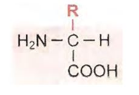
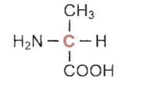
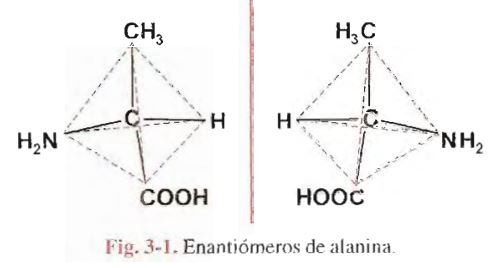

Practicamente todos los procesos biólogicos dependen de la presencia y/o actividad de este tipo de sustancias. Bastan algunos ejemplos para dar idea de la variedad y trascendencia de funciones a ellas asignadas. Son proteínas casi todas las:
enzimas, catalizadores de reacciones químicas en organismos vivientes;
muchas hormonas, reguladores de actividades celulares;
la hemoglobina y otras moléculas con funciones de transporte en la sangre;
anticuerpos, encargados de acciones de defensa natural contra infecciones o agentes extraños;
los receptores de las células, a los cuales se fijan moléculas capaces de desencadenar una respuesta determinada;
la Actina y la Miosina, responsables finales del acortamiento del músculo durante la contracción;
el colágeno, integrante de fibras altamente resistentes en tejidos de sostén.
Hoy es posible interpretar mecanismos íntimos que condicionan muchos procesos vitales y, sobre todo, demostrar la estrecha relación existente entre estructura molecular y función
Todas las proteínas contienen carbono, hidrógeno, oxígeno y nitrógeno y casi todas poseen también azufre. Si bien hay ligeras variaciones en diferentes proteínas, el contenido de nitrógeno representa, termino medio, 16% de la masa total de la molécula; es decir, cada 6,25g de proteina contiene 1 g de N. El factor de 6,25 se utiliza para estimar la cantidad de proteina existente en una muestra a partir de la medición de N de la misma
Las Proteínas son moléculas de enorme tamaño; pertenecen a la categoria de macromoléculas, constituidas por el gran numero de unidades estructurales. En otros terminos, se trata de POLIMEROS (POLI: muchos; Meros: partes).
Debido a su gran tamaño, cuando estas moléculas se dispersan en un solvente adecuado, forman obligadamente soluciones coloidales, con características que las distinguen de las soluciones de moléculas pequeñas
Por hidrólisis se obtienen las unidades estructurales de las proteínas, los aminoácidos, de bajo peso molecular, existen veinte especies diferentes de aminoácidos
Los aminoácidos constituyentes de proteinas son compuestos con un grupo ácido, carboxilo (-COOH) y un grupo básico, amina (-NH2), unido al carbono alfa ( el carbono alfa de un ácido orgánico es el inmediato al carboxilo) Son, entonces, alfa-aminoácidos y su formula general es :
donde R corresponde a la cadena lateral, diferente para cada uno de los veinte aminoácidos distintos que se obtienen de la hidrolisis de proteínas
De acuerdo con la formula general presentada, todos los aminoácidos (excepto la glicina, en la cual R es un hidrógeno) tienen las cuatro valencias de carbono alfa saturadas por grupos diferentes Este hecho determina la existencia de dos isómeros ópticos, con configuración espacial distinta, para cada aminoácido.
Se domina isómeros a compuestos diferentes con la misma formula molecular. Contienen igual número y clase de átomos, pero unidos entre sí de manera distinta. Cuando difieren en su disposición espacial, se tienen isómeros, categoría a la cual pertenecen los isómeros ópticos
Según la teoría tetraédrica, los cuatro enlaces del átomo de carbono son equivalentes y orientados hacia los vértices de un tetraedro regular, Cuando cada una de las valencias está saturada por elementos o grupos atómicos diferentes, la molécula resulta asimétrica, Se dice en ese caso que el carbono es asimétrico.
Por ejemplo, en el aminoácido alanina:
el carbono en rojo es asimétrico porque está unido a cuatro grupos atómicos distintos ( -H, -CH3, -NH2 y -COOH )
Los grupos unidos al carbono asimétrico central pueden ser dispuestos en el espacio de dos maneras diferentes. De ello resultan dos moléculas, cada una de las cuales es la imagen en el espejo de la otra. Estos isómeros no son superponibles; guardan entre sí la misma relación existente entre la mano izquierda y la mano derecha, de allí el nombre de compuestos quirales dado a este tipo de isómeros (del griego Kiros: mano ). Se los conoce también como isómeros ópticos, enantiomeros o enantiomorfos.
Isómeros de este tipo poseen muchas de sus propiedades químicas iguales y propiedades físicas idénticas, excepto su capacidad para desviar el plano de vibración de la luz polarizada en uno u otro sentido
De los alfa-aminoácido obtenidos por hidrólisis de proteínas, la mayoría posee un grupo ácido carboxilo y un grupo básico amina, razón por la cual se los considera neutros. Dos de ellos tienen un grupo carboxilo adicional que les confiere carácter ácido, mientras otros poseen grupos básicos adicionales. Dos de los aminoácidos contienen azufre en su molécula. Finalmente hay uno, denominado prolina en el cual el carbono adyacente al de la función carboxilo forma parte de un ciclo
A continuación se presentan los aminoácidos constituyentes de proteínas, agrupados según las características de sus cadenas abreviadas, una de tres y otra de una letra, para indicar cada aminoácido. Ambas figuran al pie de la formula respectiva. Las cadenas laterales se representan en rojo
************* PAGINA 24Las propiedades de la cadena de cada aminoácido permiten predecir su comportamiento. El grupo sulfhidrilo de cisteína con otro similar para formar uniones disulfuro (-S-S-). Dos cisteínas ligadas por este tipo de enlace covalente forman cistina
IMAGEN P26 CISTINAEl grupo carboxilo adicional de ácidos aspártico y glutámico, además de otorgarles carácter ácido, da a estos aminoacidos la propiedad de interactuar con sustancias básicas para formar uniones de tipo salino. También pueden establecer atracciones electrostáticas de este tipo los aminoácidos diaminados.
Las características de las cadenas laterales permiten agrupar los aminoácidos en: POLARES: GLICINA, SERINA, TREONINA, ISTEÍNA, TIROSINA, ÁCIDO ASPÁRTICO, ÁCIDO GLUTÁMICO, ASPARRAGINA, GLUTAMINA, LISINA, LEUCINA, ISOLEUCINA, METIONINA, FENILALANINA, TRITÓFANO y PROLINA.
La existencia, en una misma molécula, de grupos ácido y básico, da a los aminoácidos propiedades eléctricas particulares. Como se ha visto, el grupo carboxilo se comporta como ácido o dador de protones: -COOH => -COO- + H+ El grupo amina acepta protones; actúa como base: -NH2 + H+ => -NH3+ En fórmulas precedentes se ha presentado a los aminoácidos con sus funciones no ionizadas, situación improbable en los medios biologicos. En realidad, al estado cristalino o en soluciones acuosas, estos compuestos se encuentran dusiciados, con cargas positiva y negativa sobre la misma molécula. Por esta razón, se dice que los aminoácidos son iones dipolares, anfolitos o anfoteros. El vocablo alemán ZWITTERION también se utiliza para designar este tipo de iones. Por ello, es más correcto representar a los alfa-aminoácidos como iones dipolares (en rojo, los grupos disociados): IMAGEN**** En soluciones ácidas fuertes, el ion dipolar capta un ion hidrógeno o protón a nivel de su carboxilo, el cual, en esas condiciones, se comporta como una base. El aminoácido se convierte entonces en un ion con carga positiva o catión, es decir, migra hacia el cátodo si se establece un campo eléctronico en la solución.
IMAGEN***En soluciones alcalinas, el protón de la función -NH3+ reacciona con iones hidroxilo para formar agua y el aminoácido queda cargado negativamente (ion negativo o anión) Es decir, a un pH fuerte alcalino, el grupo NH3+ se comporta como ácido.
imagen******* La carga eléctrica del aminoácido depende del pH del medio en el cual está disuelto. Si la concentración de iones hidrógeno aumenta en el medio, los iones -COO- (carboxilato) captan protones, disminuyen progresivamente las formas iónicas dipolares y se forman cationes. En cambio, cuando disminuye la concentración de H+, esto es, aumenta la de OH-, los grupos -NH3+ ceden H+, pierden su carga y se forman aniones. Hay un valor de PH, característico para cada aminoácido, en el cual la disociación de cargas positivas y negativas se iguala y, por lo tanto, la carga total del aminoácido es nula. A este valor de pH se lo denomina punto isoeléctrico (pHi o pI).En los aminoácidos dicarboxilicos o diaminados existe un grupo disociable adicional. Al analizar el comportamiento del ácido aspártico, por ejemplo, se puede comprobar que en un medio ácido fuerte está completamnete protonado. Si se alcaniliza la solución por adición de una base fuerte (NaOH), el aminoácido cedera protones. El ácido aspártico forma sucesivamente distintas especies iónicas a medida que el pH aumenta (fig 3-4) Analoga comparación se puede hacer con aminoácidos diaminados como, por eje, la LISINA
El estudio de las curvas de titulación de ácidos y bases débiles, consideradas en el capitulo anterior, tiene interés para comprender el comportamiento ácido-base de esas sustancias en solución. Analizaremos la curva correspondiente a un aminoácido con dos grupos ionizables y tomaremos como ejemplos la alanina (+H3N-CHR-COO-;) R corresponde a metilo en la alanina
Los equilibrios de sisociación para cada uno de los grupos ionizables del aminoácido se indican en las ecuaciones siguientes:
IMAGEN DE ecuacionesEn una solución de alanina en agua pura, las dos funciones del aminoácido están ionizadas y el pH del medio es el correspondiente al punto isoeléctrico de alanina (pH= 6.02). A partir de este punto se pueden realizar dos titulaciones por separado, la del grupo -COO-, que se comporta como una base al aceptar protones y la del grupo NH3+, que actua como ácido debil, liberando H+. Para la primera neutralización puede utilizarse una solucion de HCl y para la segunda, una de NaOH. La representación conjunta de los cambios de pH producidos en el curso de ambas valoraciones da una curva bifasica (fig- 3-6)
Antes de agregar HCl, todas las moléculas del aminoácido se encuentran al estado de ion dipolar (pH=6.02=pHi) La adición de ácido aumenta la concentración de H+ del medio y determina la aceptación de protones por parte de grupos -COO-, aL llegar a pH 2.34, la mitad de los grupos -COOH presentes se encuentra al estadono disociado; las concentraciones de las formas +H3N-CHR-COOH y +H3N-CHR-COO- se igualan. Dicho valor de pH corresponde al pK del carboxilo (pK1). Si se continúa agregando ácido se alcanza un punto en el cual Prácticamente todas las moléculas de aminoácido están protonadas (+H3N-CHR-COOH), situación que corresponde al extremo inferior de la gráfica
La mitad superior de la curva se obtiene por titulación con NaOH. A partir del pHi, el aumento de la concentración de OH- provocado por la adición del ÁLCALI, determina la sustracción de H+ del medio para formar agua. Esto crea una nueva situación de equilibrio, en la cual los grupos -NH3+ se comportan como ácidos débiles, liberando protones. El punto medio de esta segunda fase se alcanza cuando las concentraciones de los iones +H3N-CHR-COO- Y H2N-CHR-COO- son iguales lo cual sucede a pH 9.69 valor igual al pK del grupo -NH3+ de la alanina (pK2),Si se continúa añadiendo NaOH hasta total neutralización, los grupos NH3+ terinan por liberar sus H+ y el compuesto queda finalmente desprotonado (H2N-CHR-COO-)
La curva de titulación permite determinar los valores de pK de cada uno delos grupos ionizables del aminoácido. El aplanamiento de la grafica en las cercanías de los puntos correspondientes a los pK, indica que el aminoácido puede actuar como amortiguador o Buffer en esas dos zonas de pH. La gráfica indica también el pHi en el punto de inflexión que separa las dos fases de la curva.
Todos los aminoácidos neutros, es decir, los que poseen una cadena lateral no ionizable dan curvas de titulación similares a las de alanina. Los valores de pK1 (del grupo carboxilo inmediato al carbono alfa) de los distintos aminoácidos, si bien son ligeramente diferentes entre sí, son todos proxímos a 2; los valores de Pk2 (del grupo amina unidos al carbono alfa) varían entre 9 y 10.
Los aminoácidos con un tercer grupo ionizable en la cadena lateral dan curvas de titulación trifasicas y tienen tres valores de pK, además de los aminoácidos dicarboxilicos y de los básicos, deben incluirse en este grupo cisteina y tirosina, cuyos grupos -SH y FENOL, respectivamente, actuán como ácidos débiles. En general, los valores de pK para los grupos ionizables se encuentran alejados del pH habitual en nuestro organismo (cercano a la neutralidad) A esto hace excepción la histina, en la cual uno de los N del núcleo imidazol puede captar un protón. Como el pK de ese grupo tiene un valor de 6.0 la Histina es el único aminoácido que actúa como amortiguador al pH fisiológico.
Los aminoácidos participan en muchas reacciones químicas. Algunas de ellas comprenden a los grupos amina o carboxilo unidos al carbono alfa, ptras son especificas de determinadas cadenas laterales y sirven para identificar en una muestra la existencia de un aminoácido en particular.
Los aminoácidos pueden establecer enlaces covalentes entre grupo carboxilo de uno y el nitrógeno del grupo alfa amina de otro, esta unión, denominada peptidica, es de tipo amida y se produce con pérdida de agua (fig 3-7)
El producto formado cuando se unen de esta manera dos aminoácidos se llama dipeptido. Es posible seguir agregando unidades aminiacídicas con el mismo tipo de unión para formar tripeptidos, tetrapeptidos, pentapéptidos,etc. En general, se denominan polipeptidos los polímeros formados por más de diez aminoácidos unidos por enlaces peptídicos. Cuando la cadena polipeptidica tiene masa molecular mayor de 6000 Da (Daltons)(lo cual corresponde a polímeros de más de 50 unidades aminoacídicas), la molécula es considerada una proteína. Por debajo deesa masa se acostumbra designar péptidos a estos compuestos No hay un limite preciso entre péptidos y proteínas; el de 6000 Da es arbitrario y se ha elegido porque es la masa aproximada de insulina, hormona producida en el páncreas y primera proteína cuya estructura completa fue conocida con exactitud
Toda cadena polipeptídica tiene un extremo en el cual queda un aminoácido con su grupo alfa-amina libre; por convención, se consedera a éste como el comienzo de la cadena y se lo llama extremo amino-terminal o N-terminal la otra punta posee libre el grupo carboxilo unido al carbono alfa; es el extremofinal, carboxilo-terminal o C-terminal. Los aminoácidos constituyentes de péptidos o proteínas pierden en la unión peptídica un H del grupo amina y OH del carboxilo; por ello, una vez integradas en la cadena, las unidades que forman el polimero son restos o residuos de aminoácidos
Los péptidos se nombran siguiendo el orden de los restos de aminoácidos integrantes a partir del que posee el grupo alfa-amina libre, los residuos de aminoácidos se indican por la raíz de su nombre seguida por el sufijo "il". El último residuo (con e grupo carboxilo libre) se menciona con su nombre completo. por ejemplo, en el caso del hexapéptido formado por serina, ácido aspártico, tirosina, lisina, alanina y cisteina (fig- 3-8), el nombre será seril- aspartil-tirosil-lisil-alanil-cisteina, que puede abreviarse ser-asp-tyr-lys-ala-cys, o SDYKAC
***IMAGEN PAGINA 29
Los grupos carboxilo y alfa-amina interesados en as uniones peptídicas han perdido OH e H respectivamente y ya no pueden ionizarese. Las propiedades ácido-base delos péptidos están determinadas por los grupos amina y carboxilo terminales y por los grupos ionzables de las cadenas laterales de sus tesiduos ionizables de las cadenas laterales de sus residuos aminoacídicos (-COOH,.NH2,SH) el pH del medio influye sobre la magnitud y el signo de la carga neta de un peptido de manera análoga a la descripta para aminoácidos. Los péptidos poseen también un punto isoeléctrico, que es el pH en el cual existe un equilibrio entre cargas positivas y negativas.
En la naturaleza, tanto en vegetales como en animales, existen mucho péptidos que cumplen importantes funciones, Forman un conjunto muy variado en composición y funciones
Si bien en general están constituidos por aminoácidos unidos como se ha descripto anteriormente, algunos de ellos suelen presentar características peculiares, como uniones peptídicas atípicas, presencia de aminoácidos o derivados de aminoácidos no habituales en proteínas, formación de estructuras ciclicas, etc.
En muchos de ellos se ha podido establecer con precisión la relación entre número y calidad de aminoácidos constituyentes, ordenamiento y disósición espacial de los mismos y actividad biológica de la molécula, ratificando la importancia de los aspectos estructurales de estos cmpuestos como determinante de su papel funcional
Uno de los péptidos más ampliamente destribuidos en la naturaleza, pues se encuentra en bacterias, vegegtales y animales, es el GLUCATIÓN. Se trata de u tripéptido, formado por ácido glutámico cisteína y glicina, en ese orden, El ácido glutámico se une por se carboxilo alfa o distal, al grupo amina de la cisteína; no se trata de una unión pept+idica típica.
Al oxidarse forma un puente disulfuro (-S-S-) con otra molécula de glutatión; la reacción es reversible.L a especie reducida posee el grupo -SH libre, mientras la oxidada tiene el enlace disulfuro
El gutatión participa en sistemas enzimáticos de óxido-reducción. Es importante para mantener reducidos grupos -SH de proteínas. En glóbulos rojos y otras células contribuye a prevenit daños oxidativos.
Existen uchos péptidos que cumplen funciones como hormonas o factores liberadores de hormonas, TABLA 3.1 HORMONAS PEPTIDICAS
Otro grupo interesante de péptidos es el de las encefalinas, presentes en el sistema nervioso central; producenn analgesia al unirse a receptores especificos en células del cerebro
Muchos antibioticos sustancias producidas por microorganismos con efectos tóxicos sobre otros microorganismos, sin péptidos o contienen un componente peptídico como parte de su molécula. Algunos de estos antibióticos tienen una estructura cíclica y a menudo contienen D-aminoácidos
Ciertas especies de hongos producen péptidos altamente tóxicos para el ser humano (amanitina)
Esta breve enumeración da idea de la diversidad de este tipo de sustanciasLos comceptos expuestos en la sección de péptidos se aplican también a proteinas, En la cadena polipeptídica, los restos de grupos carboxilos y alfa-amina interesados en uniones peptídicas no son ionizables. Sólo pueden disociarse aquellos que se encuentran libres, como el grupo alfa-amina del extremo N-terminal y el carboxilo del extremos C-terminal. Obviamente, esos dos grupos, por sí solos, no tendrían gran incidencia en las propiedades ácido-base de una macromolecula. la carga eléctrica de una proteína depende de la ionización de los grupos disociables existentes en las cadenas laterales de los restos aminoacídicos componentes.
La presencia de abundantes residuos de LISINA, arginina o histidina en la molécula le otorgan carácter básico. Lisina y arginina poseen grupos amina adicionales que aceptan protones y adquieren carga positiva. Histidina posee el núcleo imidazol, uno de cuyos nitrógenos puede fijarse un protón. Si, en cambio, hay predominio de restos aspartato y glutamato en una proteína, ésta tendrá propiedades acídas, debidas al carboxilo adiconal de esos aminoácidos, capaz de liberar ion hidrógeno y adquirir carga electronegativa. El grupo fenólico de tirosina y el sulfidrilo de cisteína tienen carácter débilmente ácidos.
La presencia de esos grupos confiere a las proteínas capacidad amortiguadora o buffer, ya que captan o liberan protones, según la mayor o menor concentración de iones H en el medio.
Sin embargo, en los límites de pH de las células (aproximadamente entre 6 y 8), sólo los restos de histidina actúan significativamente como amortiguador, pues el pK de la función ionizable de su núcleo imidazon (pk=6) está más próximo a aquellos valores de pH
En solucion francamente ácida, la mayor parte de los grupos amina libres captan iones hidrógeno, mientras la mayoria de los grupos acídos están no disociados. En estas condiciones, la proteína presenta una carga neta positiva.
Por el contrario, en una solución fuertemente alcalina los grupos amina libres ceden protones, quedan no ionizados, y los grupos carboxilo se disocian. En medio alcalino, la proteína exhibe una carga total o neta de signo negativo.
Si a una solución de proteína de pH netamente ácido se le agrega álcali, de modo que el pH suba progresivamente, se producirán cambios en la magnitud y signo de la carga neta, pues los grupos ionizables de la proteína irán liberando iones hidrógeno. La carga positiva inicial de la proteína se reduce, pues los grupos más acídicos (-COOH) ceden sus protones y se hacen electronegativos.
En el curso de la adición de álcali, llega un momento en el cual el número de cargas positivas es igual al de cargas negativas. En este instante, la molécula tiene carga total igual a cero. El pH de la solución en el cual la carga neta es nula, se conoce como punto ISOELECTRICO y se indica con el simbolo pHi o pI. Si el pH del medio sigue
aumentando, también liberan rotones los grupos de caracter ácido más debil (-SH, fenol, -NH3+) y la proteina se torna progresivamente más electronegativa.Dos proteínas con diferentes cantidades de grupos ácidos y básicos libres, tendrá, distintas carga neta a un determinado pH. La magnitud de la carga electrica de una proteína es proporcional a la diferencia entre el pH del medio y su pHi. Será tanto más electropositiva cuanto más ácido sea el medio con respecto al punto isoeléctrico; por otro lado, la carga electronegativa será tanto mayor cuando más alcalino sea el pH del medio con relación al pHi de la proteína
Gran parte de las proteínas son solubles en agua o en soluciones acuosas. La estabilidad de estas soluciones se debe a varios factores. Uno de los más importantes es la propiedad de las particulas dispersas de interactuar con moléculas de solventes polares como el agua, que forman una cubierta o aureola denominada capa de solvatación (de hidratación cuando el solvente es agua) Gracias a su alta constante dieléctrica, el agua aísla entre sí a grupos de cargas opuestas en diferentes moléculas e impide que éstas tiendan a agregarse y precipitar.
la presencia de grupos funcionales ionizados, como -NH3+ y -COO- y de otros grupos polares (-OH,-SH,=NH) atrae moléculas de agua, que se orientan a su alrededor, formando una capa de hidratación
Las diferencias de solubilidad entre distintas proteínas pueden deberse a su diverso grado de hidratación, determinado por el número de grupos polares. Es necesario tener en cuenta también la presencia de grupos no polares que repelen el agua (núcleos aromáticos, cadenas alifáticas), cuyo número y distribución influyen en el grado de solvatación.
Otro factor de estabilidad es la carga eléctrica neta o total de la molécula, de igual signo para todas las partículas de una misma proteína y, por lo tanto, origina fuerzas de rechazo mutuo e impide su agrupamiento y precipitación. El valor de la carga neta puede ser diferente para distintas proteínas en similares condiciones de medio y ello explica su diferente grado de solubilidad. Esta solubilidad varia con el pH, la temperatura y la presencia de sales inorganicas o solventes no polares en el medio. La conducta frente a estos factores es distinta para diferentes proteínas, lo cual se aprovecha en métodos de fraccionamiento, tales como la precipitación selectiva mediante agregado de sales o solventes no polares en diversas condiciones de concentración, pH y temperatura.El pH es un factor importante en la solubilidad de una proteina por cuanto de él depende la magnitud de la carfa eléctrica neta de la molécula. La carga eléctrica total de una molécula proteínica es nula en su punto isoeléctrico y, en consecuencia, la solubilidad será minima a ese pH esta propiedad puede ser utilizada para separar proteínas de una mezcla modificando el pH hacia valores en los cuales una de ellas tiende a precipitar. mientras las restantes, de diferente pHi, no son afectadas (separación isoeléctrica). En el pHi la carga neta es cero, las fuerzas de repulsión intermoleculares desaparecen y la precipitación puede producirse directamente o luego de la adición de agentes que actúen sobre la capa de solvatación
A bajas concentraciones, las sales favorecen la solubilidad de muchas proteínas pues los iones inorgánicos interaccionan con los grupos ionizados de las molécuas proteínicas. El fenómeno es más notable en proteínas con marcado carácter dipolar, es decir, en aquellas en cuya molécula las cargas de signo contrario se distribuyen asimétricamente.La adición de sales neutras reduce la atracción electrostática entre esas moléculas y favorece la estabilidad de la solución.Sin embargo, a medida que se aumenta la concentración de sal, sus iones ejercen atracción sobre las moléculas de agua de la capa de solvatación y tienden a despojar a la proteína de su cubierta hidratante.En consecuencia. su solubilidad decrece. Cuando la concentración de sal alcanza cierto valor, estos efectos se hacen suficientemente intensos como para provocar la precipitación de la proteína.
Los sulfatos de amonio,sodio o magnesio, y el hiposulfito de sodio son, entre otras, las sales más utilizadas para obtener precipitaciones selectivas. En efecto, cuando se agrega una de estas sales a soluciones de mezclas de proteínas, se puede obtener precipitación de las diferentes fracciones a medida que se alcanzan distintas concentraciones de sal en el medio; a este metodo de separación se lo llama fraccionamiento salino Estos métodos resultan convenientes, pues las proteínas no so alteradas y pueden ser redisueltas sin mengua de sus propiedades.
El agregado desolventes poco polares (etanol,acetona,etc.) a soluiones de proteínas disminuye su solubilidad y produce precipitación cuando la concentración del solvente alcanza ciertos valores, variables según la proteína considerada. La precipitación se acompaña de alrteración de la proteína (desnaturalización), a menos que trabaje a temperaturas muy bajas. Si a una solución compleja de proteínas se le agrega etanol en forma paulatina, se va creando condiciones de solubilidad diferentes para distintas proteínas y se obtiene precipitación selectiva de las mismas (fraccionamiento alcohólico). El etanol tiene una constante dieléctrica menor que el agua; por esta razón, disminuye el poder aislarte del medio, lo cual permite la atracción de grupos con carga opuesta y favorece la producción de agrupamientos moleculares que tienden a precipitar. para lograr precipitación fraccionada es necesario realizar cuidadosos ajustes de temperatura y pH a fin de evitar la desnaturalización y acentuar el efecto de disminución de la carga total de las moléculas de proteína.